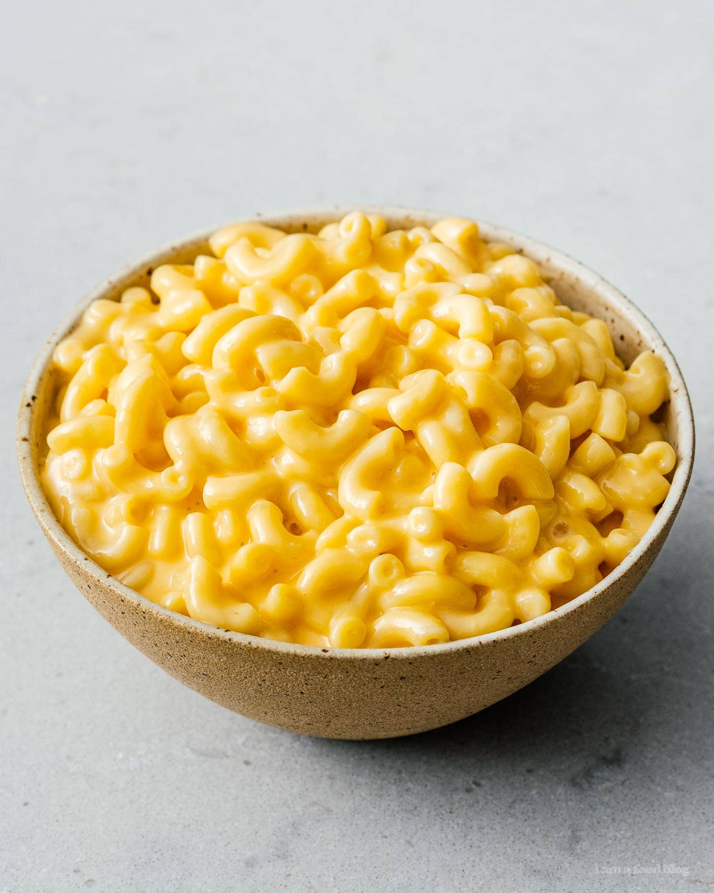

Mac And Cheese

Description
This is a bare-bones method for making some very cheesey veleta(sp) mac and cheese. Go hog wild.
Ingredients
- 1 cup raw elbow macaroni
- 6 oz. diced Velveta(sp) cheese
- 1/4 cup milk
Instructions
- Bring water to a boil
- Boil 1 cup macaroni for 8 minutes
- Strain macaroni
- Reduce 6 oz. diced Velveta cheese in 1/4 cup milk on low heat
- Add macaroni, stir well
- Salt and Pepper to taste